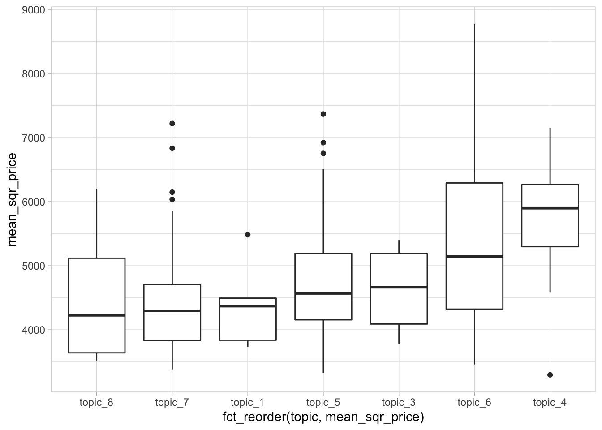
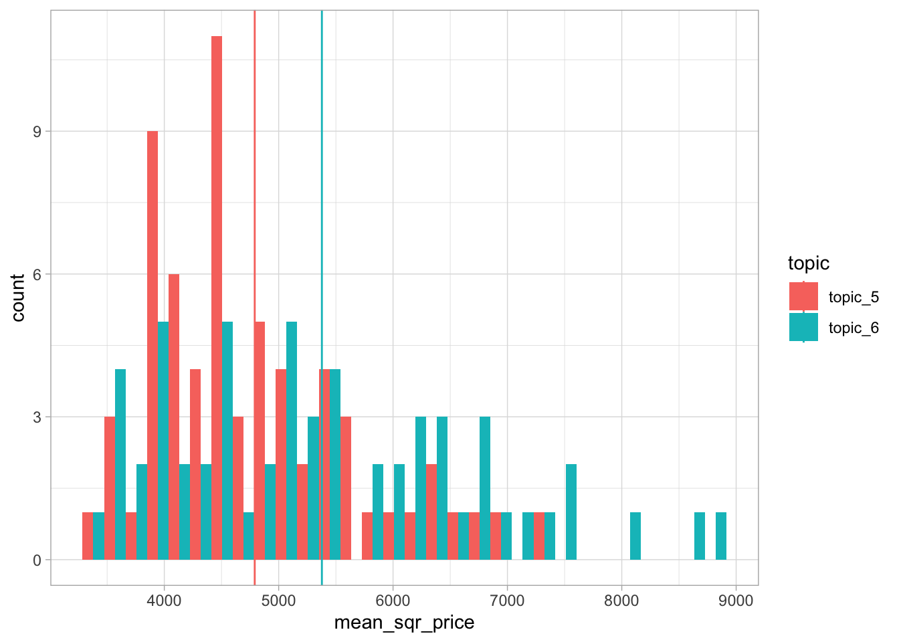
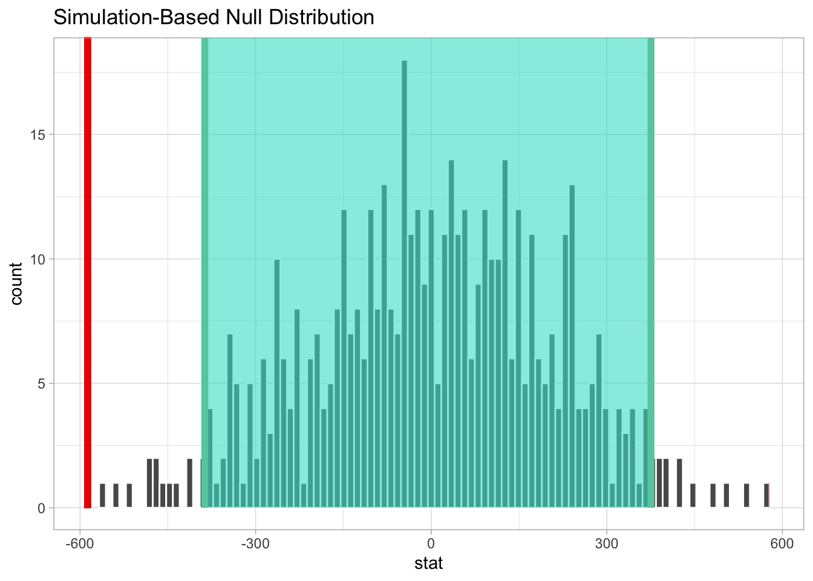
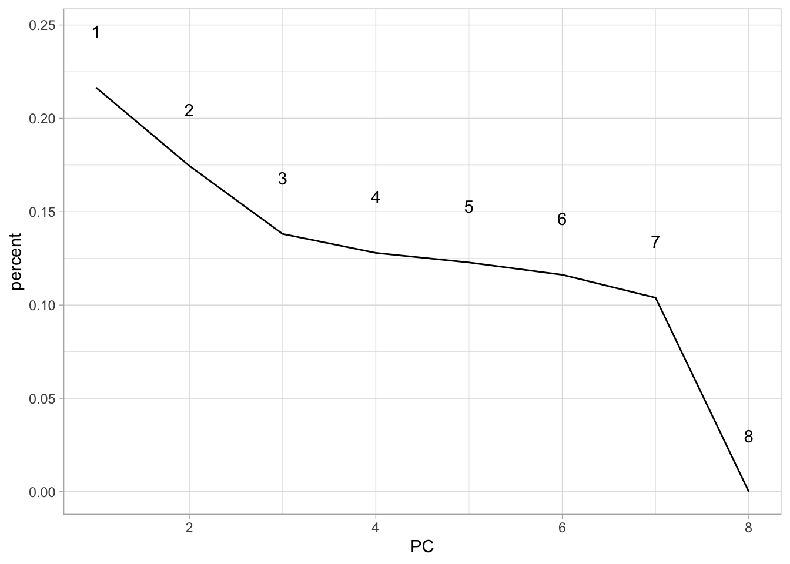
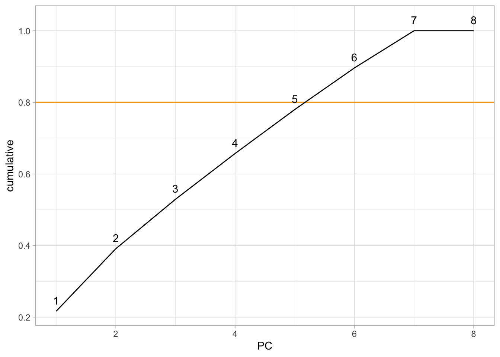
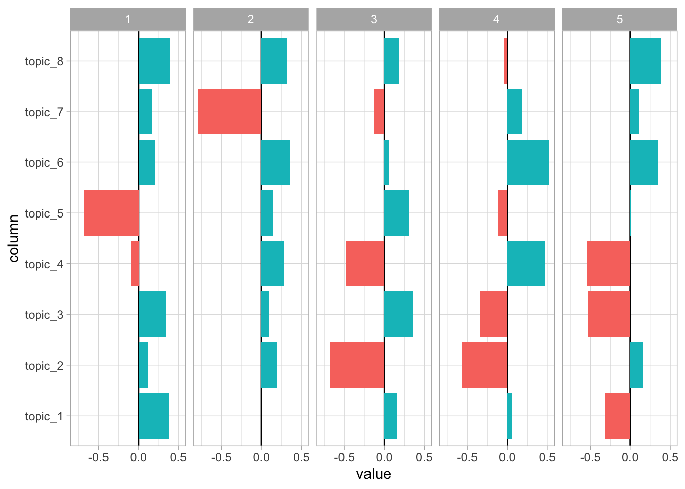
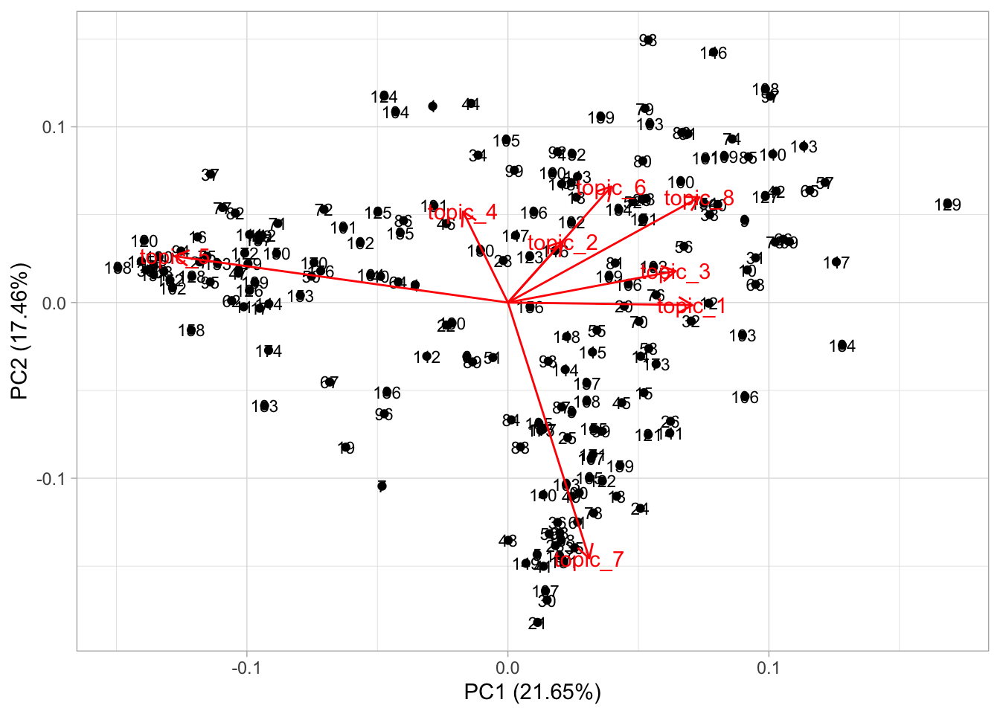
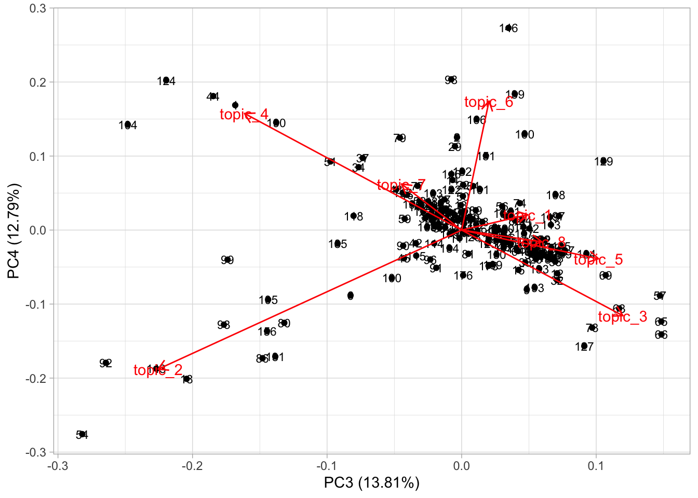

Chapter 5 PCA
theme_light() %>% theme_set()
house_hex <- read_rds(here::here("project-data/house_hex.rds"))
theta <- read_rds(here::here("project-data/theta.rds"))
topic <- read_rds(here::here("project-data/topic.rds")) %>%
mutate(topic = paste("topic",topic, sep = "_"))5.1 Binding topic with housing
This setup is to bind topics with housing, which will filter out some locations with topics but without housing informaiton. It opted out the topic 2 (puublic service) which does not appear in the housing datasets.
## Joining, by = "document"colnames(topic) <- paste( "topic", colnames(topic), sep = "_")
house_hex <- house_hex %>% left_join(topic, by = c("hex_id" = "topic_document")) %>%
filter(!is.na(topic_topic)) %>% rename(!!"topic":=topic_topic)
house_hex %>% tm_shape() + tm_polygons(col = "topic")
## hex_id mean_price mean_area mean_sqr_price mean_lease topic topic_1
## 1 167 346765.6 105.20312 3296.153 70.42188 topic_4 0.04075092
## 2 193 365440.9 101.13976 3613.227 75.32289 topic_6 0.24845406
## 3 205 395574.2 88.94545 4447.379 90.05455 topic_7 0.07038835
## 4 206 390642.3 117.43452 3326.469 74.70387 topic_5 0.06833333
## 5 218 455775.8 106.09975 4295.730 82.93682 topic_7 0.03409091
## 6 219 378439.8 107.05645 3534.956 82.97984 topic_5 0.03346995
## topic_2 topic_3 topic_4 topic_5 topic_6 topic_7 topic_8
## 1 0.07554945 0.02609890 0.57188645 0.07371795 0.10851648 0.0279304 0.07554945
## 2 0.03202297 0.01435512 0.18750000 0.13361307 0.21400177 0.1274293 0.04262367
## 3 0.08980583 0.08980583 0.07038835 0.08009709 0.07038835 0.4684466 0.06067961
## 4 0.06166667 0.06166667 0.05500000 0.42833333 0.06833333 0.1550000 0.10166667
## 5 0.03409091 0.03106061 0.04924242 0.03106061 0.04015152 0.7522727 0.02803030
## 6 0.27937158 0.04166667 0.03346995 0.21926230 0.02800546 0.3203552 0.044398915.2 Sample statistic
| Name | bind_data |
| Number of rows | 193 |
| Number of columns | 14 |
| _______________________ | |
| Column type frequency: | |
| character | 2 |
| numeric | 12 |
| ________________________ | |
| Group variables | None |
Variable type: character
| skim_variable | n_missing | complete_rate | min | max | empty | n_unique | whitespace |
|---|---|---|---|---|---|---|---|
| hex_id | 0 | 1 | 3 | 3 | 0 | 193 | 0 |
| topic | 0 | 1 | 7 | 7 | 0 | 7 | 0 |
Variable type: numeric
| skim_variable | n_missing | complete_rate | mean | sd | p0 | p25 | p50 | p75 | p100 | hist |
|---|---|---|---|---|---|---|---|---|---|---|
| mean_price | 0 | 1 | 461830.42 | 105766.21 | 260333.33 | 386485.98 | 438532.77 | 523440.25 | 787926.03 | ▂▇▃▂▁ |
| mean_area | 0 | 1 | 95.04 | 14.79 | 57.00 | 84.14 | 95.36 | 106.00 | 127.36 | ▂▅▇▇▃ |
| mean_sqr_price | 0 | 1 | 4916.61 | 1114.77 | 3296.15 | 4043.05 | 4589.79 | 5482.73 | 8770.76 | ▇▇▃▂▁ |
| mean_lease | 0 | 1 | 70.80 | 9.05 | 50.22 | 64.38 | 69.22 | 77.27 | 95.36 | ▂▇▆▅▁ |
| topic_1 | 0 | 1 | 0.07 | 0.07 | 0.01 | 0.03 | 0.05 | 0.08 | 0.51 | ▇▁▁▁▁ |
| topic_2 | 0 | 1 | 0.08 | 0.13 | 0.01 | 0.03 | 0.04 | 0.08 | 0.81 | ▇▁▁▁▁ |
| topic_3 | 0 | 1 | 0.07 | 0.11 | 0.00 | 0.02 | 0.04 | 0.07 | 0.63 | ▇▁▁▁▁ |
| topic_4 | 0 | 1 | 0.08 | 0.11 | 0.01 | 0.03 | 0.05 | 0.09 | 0.75 | ▇▁▁▁▁ |
| topic_5 | 0 | 1 | 0.24 | 0.28 | 0.00 | 0.03 | 0.08 | 0.48 | 0.89 | ▇▁▁▂▁ |
| topic_6 | 0 | 1 | 0.08 | 0.09 | 0.01 | 0.03 | 0.05 | 0.09 | 0.73 | ▇▁▁▁▁ |
| topic_7 | 0 | 1 | 0.24 | 0.24 | 0.00 | 0.05 | 0.14 | 0.39 | 0.88 | ▇▂▂▁▁ |
| topic_8 | 0 | 1 | 0.13 | 0.16 | 0.01 | 0.04 | 0.07 | 0.15 | 0.75 | ▇▁▁▁▁ |

The chart and statistics summary above show that there some price-topic relation. Topic 4 (university) shows higher average housing prices. Topic 6 (important buildings) has second highest average housing price. While the housing near topic 8 (culture) has the least housing price.
5.2.1 Compare mean price between topics
The hypothesis testing takes topic 5 (School) and topic 6 (Important buildings) as comparison. The null hypothesis assumes that the topics have a same housing price, which is mean(topic5) - mean(topic6) = 0.
topic_mean <- bind_data %>%
filter(topic %in% c("topic_5", "topic_6")) %>%
group_by(topic) %>%
summarise(mean = mean(mean_sqr_price))
topic_mean## # A tibble: 2 x 2
## topic mean
## <chr> <dbl>
## 1 topic_5 4791.
## 2 topic_6 5378.ggplot() +
geom_histogram(
data = bind_data %>%
filter(topic %in% c("topic_5", "topic_6")),
mapping = aes(x = mean_sqr_price, group = topic, fill = topic),
position = position_dodge()
) +
geom_vline(
data = topic_mean,
mapping = aes(xintercept = mean, group = topic, color = topic)
)## `stat_bin()` using `bins = 30`. Pick better value with `binwidth`.
bind_data %>%
filter(topic == "topic_5") %>%
specify(response = mean_sqr_price) %>%
generate(reps = 100) %>%
calculate(stat = "mean") %>%
get_ci()## Setting `type = "bootstrap"` in `generate()`.## # A tibble: 1 x 2
## `2.5%` `97.5%`
## <dbl> <dbl>
## 1 4598. 5070.mean_diff <- bind_data %>%
filter(topic %in% c("topic_5", "topic_6")) %>%
specify(formula = mean_sqr_price ~ topic) %>%
calculate(stat = "diff in means", order = c("topic_5", "topic_6"))
mean_diff## # A tibble: 1 x 1
## stat
## <dbl>
## 1 -587.null_distribution <- bind_data %>%
filter(topic %in% c("topic_5", "topic_6")) %>%
specify(formula = mean_sqr_price ~ topic) %>%
hypothesize(null = "independence") %>%
generate(reps = 500, type = "permute") %>%
calculate(stat = "diff in means", order = c("topic_5", "topic_6"))
null_ci <- null_distribution %>% get_ci()
null_distribution %>%
visualise(bins = 100) +
shade_p_value(obs_stat = mean_diff, direction = "both") +
shade_ci(null_ci)
## # A tibble: 1 x 1
## p_value
## <dbl>
## 1 0The significance is set to 0.05. In this case, the p-value is smaller than 0.05. So, it rejects H0, and indicates that the average price of topic 5 is significantly different from that of topic 6.
5.3 PCA
## topic_1 topic_2 topic_3 topic_4 topic_5 topic_6 topic_7
## 1 0.04075092 0.07554945 0.02609890 0.57188645 0.07371795 0.10851648 0.0279304
## 2 0.24845406 0.03202297 0.01435512 0.18750000 0.13361307 0.21400177 0.1274293
## 3 0.07038835 0.08980583 0.08980583 0.07038835 0.08009709 0.07038835 0.4684466
## 4 0.06833333 0.06166667 0.06166667 0.05500000 0.42833333 0.06833333 0.1550000
## 5 0.03409091 0.03409091 0.03106061 0.04924242 0.03106061 0.04015152 0.7522727
## 6 0.03346995 0.27937158 0.04166667 0.03346995 0.21926230 0.02800546 0.3203552
## topic_8
## 1 0.07554945
## 2 0.04262367
## 3 0.06067961
## 4 0.10166667
## 5 0.02803030
## 6 0.04439891To understand more about the dataset, it will use PCA to see how the topics incorporate with each other. The input data with be the theta value of each hexagons (shows above output). The theta value indicates how the data fit with each topics and shows the probabilities.
pc <- topic_house %>%
# select(-mean_price, -mean_area, -topic) %>%
select(starts_with("topic_")) %>%
prcomp(., scale. = T, center = T)
tidy(pc, "pcs")## # A tibble: 8 x 4
## PC std.dev percent cumulative
## <dbl> <dbl> <dbl> <dbl>
## 1 1 1.32e+ 0 0.216 0.216
## 2 2 1.18e+ 0 0.175 0.391
## 3 3 1.05e+ 0 0.138 0.529
## 4 4 1.01e+ 0 0.128 0.657
## 5 5 9.91e- 1 0.123 0.780
## 6 6 9.64e- 1 0.116 0.896
## 7 7 9.12e- 1 0.104 1
## 8 8 5.25e-16 0 1tidy(pc, "pcs") %>%
ggplot(aes(x = PC, y = percent)) +
geom_line() +
geom_text(aes(x = PC, y = percent, label = PC), nudge_y = 0.03)
tidy(pc, "pcs") %>%
ggplot(aes(x = PC, y = cumulative)) +
geom_hline(yintercept = 0.8, color = "orange") +
geom_line() +
geom_text(aes(x = PC, y = cumulative, label = PC), nudge_y = 0.03)
tidy(pc, "variables") %>%
filter(PC < 6) %>% # only show first 4 components
ggplot(aes(x = column, y = value)) +
geom_hline(yintercept = 0) +
geom_col(aes(fill=(value >= 0)),
show.legend = FALSE) +
coord_flip() +
facet_grid(~PC)
In order to catch 80% of variance, it will set to see the first 5 princle components. Even thought the dimension do not reduce a lot, it provides a scope to see how the topics related. From the first component, the topic 4 (university) and 5 (schools) have negative relations with other topics. With some nuance, topic 7 will be less likely to align with others, which shows in PC2.


From PC1 and PC2 dimension, most topics are close to each other except topic 4, 5, 7. It shows that topic 4 (university) and topic 7 (transport) have negative relations. Topic 5 (schools) also shows relatively negative relation with topic 7.
From PC3 and PC4, it shows that topic 4 (university) shows either negative or no relation with other topics. A possible reason may be a university can be a isolated area with self functioning place like a university town. The same feature also appear to topic 7 (transport), because the transportation interchange may take a large area land where other functional places may not be able to be included.
Topic 1 (landmark), 3 (recreation), 5 (school) and 8 (culture) show a strong relation with each other, the reason may be that Singapore has well mixture of land use.
pc_topic <- topic_house %>%
augment(pc, .) %>%
select(hex_id, mean_sqr_price, .fittedPC1, .fittedPC2, .fittedPC3, .fittedPC4, .fittedPC5)
pc_topic %>% head()## # A tibble: 6 x 7
## hex_id mean_sqr_price .fittedPC1 .fittedPC2 .fittedPC3 .fittedPC4 .fittedPC5
## <chr> <dbl> <dbl> <dbl> <dbl> <dbl> <dbl>
## 1 167 3296. -0.527 1.83 -2.46 2.37 -2.30
## 2 193 3613. 0.944 0.775 -0.0504 1.76 -0.934
## 3 205 4447. 0.448 -1.02 -0.298 0.0708 -0.170
## 4 206 3326. -0.649 0.165 0.436 -0.200 -0.00827
## 5 218 4296. 0.205 -2.35 -0.438 0.465 0.235
## 6 219 3535. -0.288 -0.504 -1.21 -1.24 0.3995.4 Regression
ols <- lm(mean_sqr_price ~ .fittedPC1+ .fittedPC2+ .fittedPC3+ .fittedPC4+ .fittedPC5, pc_topic)
glance(ols)## # A tibble: 1 x 11
## r.squared adj.r.squared sigma statistic p.value df logLik AIC BIC
## <dbl> <dbl> <dbl> <dbl> <dbl> <int> <dbl> <dbl> <dbl>
## 1 0.148 0.126 1042. 6.52 1.30e-5 6 -1612. 3238. 3261.
## # … with 2 more variables: deviance <dbl>, df.residual <int>The regression model take on the first 5 principle components which consisting of theta values. The R.squared shows a relative low relation between housing price and topics.
## # A tibble: 6 x 5
## term estimate std.error statistic p.value
## <chr> <dbl> <dbl> <dbl> <dbl>
## 1 (Intercept) 4917. 75.0 65.5 6.19e-131
## 2 .fittedPC1 161. 57.2 2.81 5.42e- 3
## 3 .fittedPC2 278. 63.7 4.36 2.11e- 5
## 4 .fittedPC3 1.57 71.6 0.0220 9.82e- 1
## 5 .fittedPC4 126. 74.4 1.69 9.27e- 2
## 6 .fittedPC5 126. 75.9 1.66 9.77e- 2A potential interpretation of the regression model may be that the PC1 and PC2 will have higher estimated housing prices, which the divergence of schols/university/transport and other locations being cateched. This divergence intensify the housing price fluctuation. In other words, if the locations tend to be either educational area or others, the housing prices may show a relative increase or decrease.
## # A tibble: 193 x 21
## hex_id mean_price mean_area mean_sqr_price mean_lease topic topic_1 topic_2
## <chr> <dbl> <dbl> <dbl> <dbl> <chr> <dbl> <dbl>
## 1 167 346766. 105. 3296. 70.4 topi… 0.0408 0.0755
## 2 193 365441. 101. 3613. 75.3 topi… 0.248 0.0320
## 3 205 395574. 88.9 4447. 90.1 topi… 0.0704 0.0898
## 4 206 390642. 117. 3326. 74.7 topi… 0.0683 0.0617
## 5 218 455776. 106. 4296. 82.9 topi… 0.0341 0.0341
## 6 219 378440. 107. 3535. 83.0 topi… 0.0335 0.279
## 7 246 495319. 109. 4529. 80.6 topi… 0.00719 0.0119
## 8 261 295190. 73.5 4018. 61.9 topi… 0.045 0.025
## 9 277 403684. 115. 3505. 66.8 topi… 0.108 0.125
## 10 290 374949. 101. 3729. 70.8 topi… 0.336 0.152
## # … with 183 more rows, and 13 more variables: topic_3 <dbl>, topic_4 <dbl>,
## # topic_5 <dbl>, topic_6 <dbl>, topic_7 <dbl>, topic_8 <dbl>, .fitted <dbl>,
## # .se.fit <dbl>, .resid <dbl>, .hat <dbl>, .sigma <dbl>, .cooksd <dbl>,
## # .std.resid <dbl>